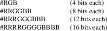

XQueryColor, XQueryColors, XLookupColor, XParseColor − obtain color values
|
int XQueryColor(Display *display, Colormap colormap, XColor *def_in_out); | |
|
int XQueryColors(Display *display, Colormap colormap, XColor defs_in_out[], int ncolors); | |
|
Status XLookupColor(Display *display, Colormap colormap, _Xconst char *color_name, XColor *exact_def_return, XColor *screen_def_return); | |
|
Status XParseColor(Display *display, Colormap colormap, _Xconst char *spec, XColor *exact_def_return); |
|
colormap |
Specifies the colormap. |
color_name
Specifies the color name string (for example, red) whose color definition structure you want returned.
def_in_out
Specifies and returns the RGB values for the pixel specified in the structure.
defs_in_out
Specifies and returns an array of color definition structures for the pixel specified in the structure.
|
display |
Specifies the connection to the X server. |
exact_def_return
Returns the exact RGB values.
|
ncolors |
Specifies the number of XColor structures in the color definition array. |
screen_def_return
Returns the closest RGB values provided by the hardware.
|
spec |
Specifies the color name string; case is ignored. |
exact_def_return
Returns the exact color value for later use and sets the DoRed, DoGreen, and DoBlue flags.
The XQueryColor function returns the current RGB value for the pixel in the XColor structure and sets the DoRed, DoGreen, and DoBlue flags. The XQueryColors function returns the RGB value for each pixel in each XColor structure and sets the DoRed, DoGreen, and DoBlue flags in each structure.
XQueryColor and XQueryColors can generate BadColor and BadValue errors.
The XLookupColor function looks up the string name of a color with respect to the screen associated with the specified colormap. It returns both the exact color values and the closest values provided by the screen with respect to the visual type of the specified colormap. If the color name is not in the Host Portable Character Encoding, the result is implementation-dependent. Use of uppercase or lowercase does not matter. XLookupColor returns nonzero if the name is resolved; otherwise, it returns zero.
The XParseColor function looks up the string name of a color with respect to the screen associated with the specified colormap. It returns the exact color value. If the color name is not in the Host Portable Character Encoding, the result is implementation-dependent. Use of uppercase or lowercase does not matter. XParseColor returns nonzero if the name is resolved; otherwise, it returns zero.
XLookupColor and XParseColor can generate BadColor error.
An RGB Device specification is identified by the prefix “rgb:” and conforms to the following syntax:
rgb:<red>/<green>/<blue>
<red>,
<green>, <blue> := h |
hh | hhh | hhhh
h := single hexadecimal digits (case insignificant)
Note that h indicates the value scaled in 4 bits, hh the value scaled in 8 bits, hhh the value scaled in 12 bits, and hhhh the value scaled in 16 bits, respectively.
For backward compatibility, an older syntax for RGB Device is supported, but its continued use is not encouraged. The syntax is an initial sharp sign character followed by a numeric specification, in one of the following formats:

The R, G, and B represent single hexadecimal digits. When fewer than 16 bits each are specified, they represent the most significant bits of the value (unlike the “rgb:” syntax, in which values are scaled). For example, the string “#3a7” is the same as “#3000a0007000”.
An RGB intensity specification is identified by the prefix “rgbi:” and conforms to the following syntax:
rgbi:<red>/<green>/<blue>
Note that red, green, and blue are floating-point values between 0.0 and 1.0, inclusive. The input format for these values is an optional sign, a string of numbers possibly containing a decimal point, and an optional exponent field containing an E or e followed by a possibly signed integer string.
The standard device-independent string specifications have the following syntax:
CIEXYZ:<X>/<Y>/<Z>
CIEuvY:<u>/<v>/<Y>
CIExyY:<x>/<y>/<Y>
CIELab:<L>/<a>/<b>
CIELuv:<L>/<u>/<v>
TekHVC:<H>/<V>/<C>
All of the values (C, H, V, X, Y, Z, a, b, u, v, y, x) are floating-point values. The syntax for these values is an optional plus or minus sign, a string of digits possibly containing a decimal point, and an optional exponent field consisting of an “E” or “e” followed by an optional plus or minus followed by a string of digits.
|
BadColor |
A value for a Colormap argument does not name a defined Colormap. | ||
|
BadValue |
Some numeric value falls outside the range of values accepted by the request. Unless a specific range is specified for an argument, the full range defined by the argument’s type is accepted. Any argument defined as a set of alternatives can generate this error. |
XAllocColor(3),
XCreateColormap(3), XStoreColors(3)
Xlib − C Language X Interface